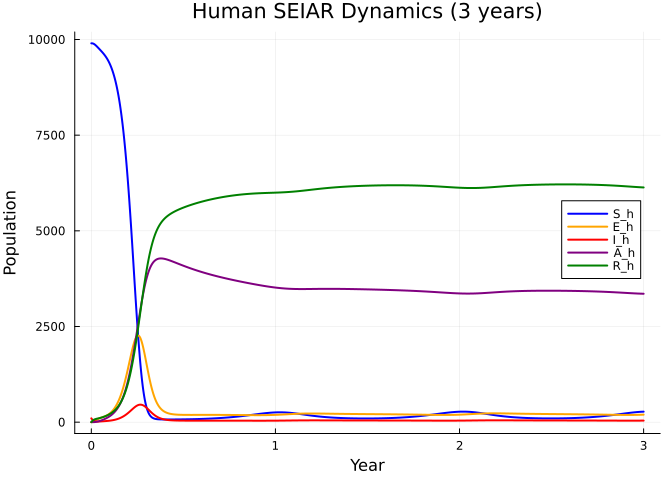
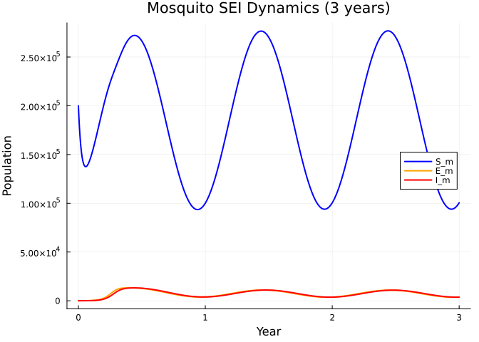
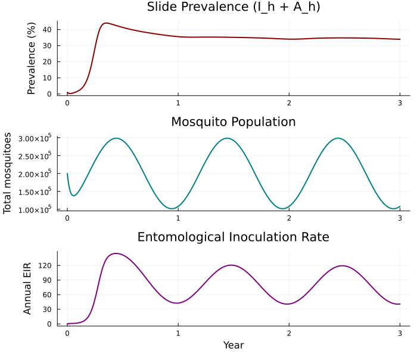
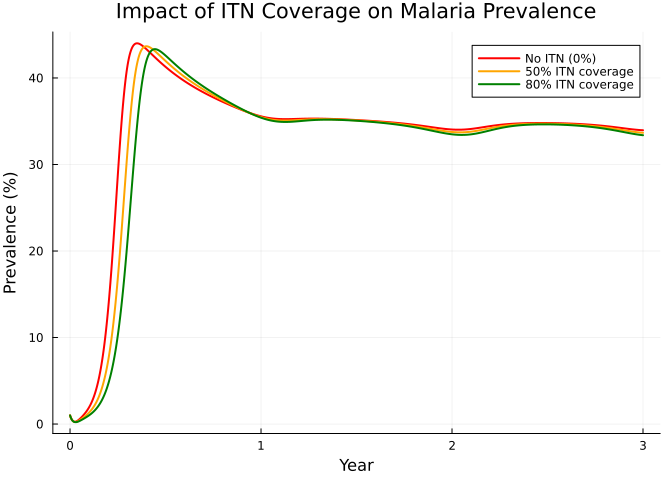
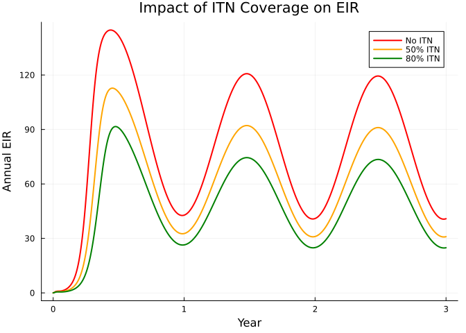
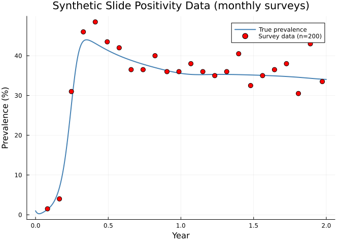
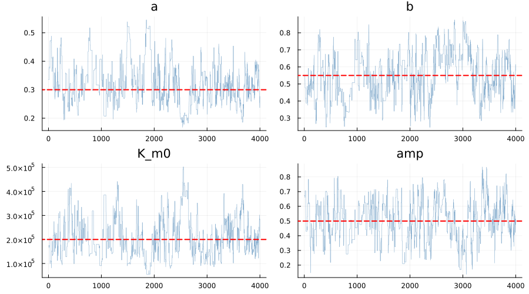
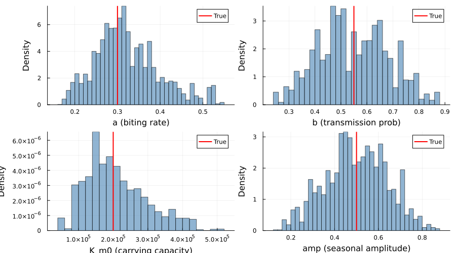
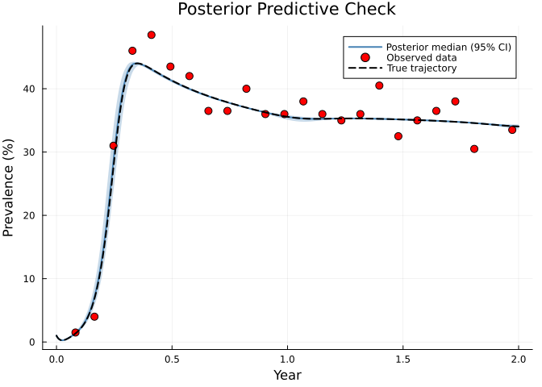
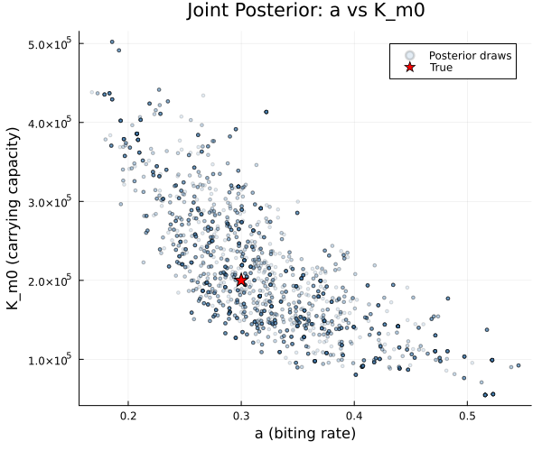

Malaria Simple: Ross-Macdonald Model with Seasonal Forcing
Introduction
Malaria remains one of the world’s most important vector-borne diseases, with roughly 250 million cases and 600,000 deaths annually. Transmission depends on the interaction between human hosts and Anopheles mosquito vectors, modulated by climate, immunity, and interventions.
The Ross-Macdonald framework captures these dynamics by coupling human and mosquito compartmental models through bidirectional forces of infection. This vignette builds a simplified teaching version — inspired by the malariasimple R package — that demonstrates:
- A five-compartment human model (SEIAR) with asymptomatic carriage and waning immunity
- Mosquito SEI dynamics with seasonal forcing of carrying capacity
- Insecticide-treated net (ITN) intervention scenarios
- Synthetic slide-positivity data generation
- Bayesian inference using an ODE-based unfilter with HMC sampling
using Odin
using Distributions
using Plots
using Statistics
using LinearAlgebra: diagm
using RandomModel Description
Human compartments (SEIAR)
The human population passes through five states:
- S_h — Susceptible
- E_h — Exposed (liver-stage parasites, ~12 day latent period)
- I_h — Infectious / clinical malaria (blood-stage, symptomatic)
- A_h — Asymptomatic carriers (infectious at reduced level)
- R_h — Recovered with temporary immunity
\[\begin{aligned} \frac{dS_h}{dt} &= \mu_h N_h + \omega R_h - \lambda_h S_h - \mu_h S_h \\ \frac{dE_h}{dt} &= \lambda_h S_h - \delta_h E_h - \mu_h E_h \\ \frac{dI_h}{dt} &= (1 - p_\text{asymp})\,\delta_h E_h - \gamma_h I_h - \mu_h I_h \\ \frac{dA_h}{dt} &= p_\text{asymp}\,\delta_h E_h + \rho R_h - \gamma_a A_h - \mu_h A_h \\ \frac{dR_h}{dt} &= \gamma_h I_h + \gamma_a A_h - \omega R_h - \rho R_h - \mu_h R_h \end{aligned}\]
A fraction $p_\text{asymp}$ of infections are asymptomatic from the outset. Recovered individuals lose immunity at rate $\omega$ (returning to $S_h$) or relapse to asymptomatic carriage at rate $\rho$.
Mosquito compartments (SEI)
Mosquitoes follow an SEI structure — they do not recover from infection:
\[\begin{aligned} \frac{dS_m}{dt} &= \mu_m K_m(t) - \lambda_m S_m \cdot \text{itn} - \mu_m S_m \\ \frac{dE_m}{dt} &= \lambda_m S_m \cdot \text{itn} - \delta_m E_m - \mu_m E_m \\ \frac{dI_m}{dt} &= \delta_m E_m - \mu_m I_m \end{aligned}\]
The carrying capacity $K_m(t)$ oscillates seasonally:
\[K_m(t) = K_{m,0}\bigl(1 + A \sin\bigl(2\pi(t - \phi)/365\bigr)\bigr)\]
ITN coverage reduces the effective biting rate: $\text{itn\_effect} = 1 - \text{itn\_cov} \times \text{itn\_eff}$.
Forces of infection
\[\lambda_h = a \cdot b \cdot I_m / N_h, \qquad \lambda_m = a \cdot c \cdot (I_h + \varphi A_h) / N_h\]
where $a$ is the biting rate, $b$ and $c$ are transmission probabilities, and $\varphi$ is the relative infectiousness of asymptomatics.
Model Definition
malaria = @odin begin
# Forces of infection
lambda_h = a * b * I_m / N_h
lambda_m = a * c * (I_h + phi * A_h) / N_h
# Human dynamics
deriv(S_h) = -lambda_h * S_h + omega * R_h + mu_h * N_h - mu_h * S_h
deriv(E_h) = lambda_h * S_h - delta_h * E_h - mu_h * E_h
deriv(I_h) = delta_h * E_h * (1 - p_asymp) - gamma_h * I_h - mu_h * I_h
deriv(A_h) = delta_h * E_h * p_asymp + rho * R_h - gamma_a * A_h - mu_h * A_h
deriv(R_h) = gamma_h * I_h + gamma_a * A_h - omega * R_h - rho * R_h - mu_h * R_h
# Seasonal mosquito dynamics
K_m = K_m0 * (1 + amp * sin(2 * pi * (time - phase) / 365))
emergence = mu_m * K_m
itn_effect = 1 - itn_cov * itn_eff
deriv(S_m) = emergence - lambda_m * S_m * itn_effect - mu_m * S_m
deriv(E_m) = lambda_m * S_m * itn_effect - delta_m * E_m - mu_m * E_m
deriv(I_m) = delta_m * E_m - mu_m * I_m
# Derived outputs
output(prevalence) = (I_h + A_h) / N_h
output(N_m) = S_m + E_m + I_m
output(EIR) = a * I_m / N_h * 365
# Initial conditions
initial(S_h) = N_h - I_h0
initial(E_h) = 0
initial(I_h) = I_h0
initial(A_h) = 0
initial(R_h) = 0
initial(S_m) = K_m0
initial(E_m) = 0
initial(I_m) = 0
# Transmission parameters
a = parameter(0.3) # biting rate (bites/mosquito/day)
b = parameter(0.55) # prob transmission: mosquito → human
c = parameter(0.15) # prob transmission: human → mosquito
phi = parameter(0.5) # relative infectiousness of asymptomatics
# Human rates
delta_h = parameter(0.0833) # 1/12: liver-stage latent rate
gamma_h = parameter(0.2) # 1/5: clinical recovery rate
gamma_a = parameter(0.005) # 1/200: asymptomatic clearance rate
omega = parameter(0.00274) # 1/365: immunity waning rate
rho = parameter(0.00137) # 1/730: relapse rate (R → A)
p_asymp = parameter(0.5) # proportion asymptomatic
mu_h = parameter(5.48e-5) # 1/(50*365): human birth/death rate
# Mosquito parameters
delta_m = parameter(0.1) # 1/10: sporogonic cycle rate
mu_m = parameter(0.1) # 1/10: mosquito death rate
K_m0 = parameter(200000) # baseline carrying capacity
# Seasonal forcing
amp = parameter(0.5) # seasonal amplitude
phase = parameter(60) # phase shift (days)
# ITN intervention
itn_cov = parameter(0.0) # ITN coverage (0–1)
itn_eff = parameter(0.5) # ITN efficacy (0–1)
# Population and initial conditions
N_h = parameter(10000)
I_h0 = parameter(100)
endOdin.DustSystemGenerator{var"##OdinModel#277"}(var"##OdinModel#277"(8, [:S_h, :E_h, :I_h, :A_h, :R_h, :S_m, :E_m, :I_m], [:a, :b, :c, :phi, :delta_h, :gamma_h, :gamma_a, :omega, :rho, :p_asymp, :mu_h, :delta_m, :mu_m, :K_m0, :amp, :phase, :itn_cov, :itn_eff, :N_h, :I_h0], true, false, false, true, false, Dict{Symbol, Array}()))Simulation
True parameters
We use a human population of 10,000 with a mosquito carrying capacity 20× larger ($K_{m,0} = 200{,}000$), reflecting a high-transmission African setting.
true_pars = (
a = 0.3,
b = 0.55,
c = 0.15,
phi = 0.5,
delta_h = 1.0 / 12,
gamma_h = 1.0 / 5,
gamma_a = 1.0 / 200,
omega = 1.0 / 365,
rho = 1.0 / 730,
p_asymp = 0.5,
mu_h = 1.0 / (50 * 365),
delta_m = 1.0 / 10,
mu_m = 1.0 / 10,
K_m0 = 200000.0,
amp = 0.5,
phase = 60.0,
itn_cov = 0.0,
itn_eff = 0.5,
N_h = 10000.0,
I_h0 = 100.0,
)(a = 0.3, b = 0.55, c = 0.15, phi = 0.5, delta_h = 0.08333333333333333, gamma_h = 0.2, gamma_a = 0.005, omega = 0.0027397260273972603, rho = 0.0013698630136986301, p_asymp = 0.5, mu_h = 5.479452054794521e-5, delta_m = 0.1, mu_m = 0.1, K_m0 = 200000.0, amp = 0.5, phase = 60.0, itn_cov = 0.0, itn_eff = 0.5, N_h = 10000.0, I_h0 = 100.0)Three-year baseline simulation
times = collect(0.0:1.0:1095.0) # 3 years
result = simulate(malaria, true_pars; times=times, seed=1)11×1×1096 Array{Float64, 3}:
[:, :, 1] =
9900.0
0.0
100.0
0.0
0.0
200000.0
0.0
0.0
0.01
200000.0
0.0
[:, :, 2] =
9899.816984737645
0.20960967386840584
81.87075343565361
0.015039993599015365
18.087612159232744
191794.95622275877
72.14615697659987
3.757074569403757
0.008188579342925262
191870.8594543048
0.04113996653497114
[:, :, 3] =
9898.607111298421
1.436152980001478
67.05404489906108
0.07966476181820842
32.82302606069894
184473.28691514654
115.81775114867615
12.565223534897024
0.006713370966087929
184601.6698898301
0.13758919770712238
;;; …
[:, :, 1094] =
273.1997650559864
195.35818814345757
40.28711309922446
3356.2784350138845
6134.876498687443
99379.35248199748
3766.41949183532
3718.9408884872855
0.3396565548113109
106864.71286232008
40.722402728935776
[:, :, 1095] =
273.74683678064827
195.84044928934375
40.36924254433928
3355.867556503633
6134.175914882033
99926.74708360809
3782.142278071156
3724.212705507179
0.3396236799047972
107433.10206718642
40.78012912530361
[:, :, 1096] =
274.23401759580616
196.339752878541
40.455024494928644
3355.4782019950926
6133.493003035628
100499.4883408229
3798.8982194177697
3730.527836366615
0.3395933226490021
108028.91439660729
40.849279808214426Human dynamics
p_hum = plot(times ./ 365, result[1, 1, :], label="S_h", lw=2, color=:blue,
xlabel="Year", ylabel="Population",
title="Human SEIAR Dynamics (3 years)", legend=:right)
plot!(p_hum, times ./ 365, result[2, 1, :], label="E_h", lw=2, color=:orange)
plot!(p_hum, times ./ 365, result[3, 1, :], label="I_h", lw=2, color=:red)
plot!(p_hum, times ./ 365, result[4, 1, :], label="A_h", lw=2, color=:purple)
plot!(p_hum, times ./ 365, result[5, 1, :], label="R_h", lw=2, color=:green)
p_hum
Mosquito dynamics and seasonality
p_mos = plot(times ./ 365, result[6, 1, :], label="S_m", lw=2, color=:blue,
xlabel="Year", ylabel="Population",
title="Mosquito SEI Dynamics (3 years)", legend=:right)
plot!(p_mos, times ./ 365, result[7, 1, :], label="E_m", lw=2, color=:orange)
plot!(p_mos, times ./ 365, result[8, 1, :], label="I_m", lw=2, color=:red)
p_mos
Epidemiological indicators
l = @layout [a; b; c]
p1 = plot(times ./ 365, result[9, 1, :] .* 100, lw=2, color=:darkred,
ylabel="Prevalence (%)", label=nothing,
title="Slide Prevalence (I_h + A_h)")
p2 = plot(times ./ 365, result[10, 1, :], lw=2, color=:teal,
ylabel="Total mosquitoes", label=nothing,
title="Mosquito Population")
p3 = plot(times ./ 365, result[11, 1, :], lw=2, color=:purple,
xlabel="Year", ylabel="Annual EIR", label=nothing,
title="Entomological Inoculation Rate")
plot(p1, p2, p3, layout=l, size=(700, 600))
The seasonal forcing creates annual peaks in mosquito density, followed by lagged peaks in prevalence and EIR. The system reaches a quasi-steady seasonal cycle by year 2.
ITN Intervention Scenarios
Insecticide-treated nets reduce the effective mosquito biting rate. Because the biting rate $a$ appears in both forces of infection, ITN interventions have a powerful, roughly quadratic effect on transmission.
pars_itn50 = merge(true_pars, (itn_cov = 0.5,))
pars_itn80 = merge(true_pars, (itn_cov = 0.8,))
res_itn50 = simulate(malaria, pars_itn50; times=times, seed=1)
res_itn80 = simulate(malaria, pars_itn80; times=times, seed=1)11×1×1096 Array{Float64, 3}:
[:, :, 1] =
9900.0
0.0
100.0
0.0
0.0
200000.0
0.0
0.0
0.01
200000.0
0.0
[:, :, 2] =
9899.9026249684
0.12577197727159475
81.8698876835881
0.014139627792192088
18.087575742948214
191825.31397265775
43.29111276306753
2.2543669090597622
0.00818840273113803
191870.8594523299
0.024685317654204394
[:, :, 3] =
9899.206977647626
0.8617797940804502
67.04229208218631
0.06694374582824265
32.822006730280386
184524.6326253956
69.49748125313644
7.539786505054971
0.006710923582801454
184601.6698931538
0.08256066223035192
;;; …
[:, :, 1094] =
422.2728457579904
182.8907938609859
37.666630033585236
3302.015843475708
6055.15388687173
102312.45921671294
2288.3428125220767
2263.9156619659398
0.33396824735092934
106864.71769120096
24.78987649852704
[:, :, 1095] =
423.57778333872494
183.42544184860512
37.75407969542691
3301.252211683734
6053.9904834335075
102868.95048011439
2297.4743071032763
2266.6771247445763
0.33390062913791607
107433.10191196224
24.82011451595311
[:, :, 1096] =
424.8104998429615
183.9835196347438
37.84632061931622
3300.5135614400315
6052.8460984629455
103451.6052086191
2307.2341265065897
2270.075027126402
0.3338359882059348
108028.9143622521
24.857321547034097p_itn = plot(times ./ 365, result[9, 1, :] .* 100,
label="No ITN (0%)", lw=2, color=:red,
xlabel="Year", ylabel="Prevalence (%)",
title="Impact of ITN Coverage on Malaria Prevalence",
legend=:topright)
plot!(p_itn, times ./ 365, res_itn50[9, 1, :] .* 100,
label="50% ITN coverage", lw=2, color=:orange)
plot!(p_itn, times ./ 365, res_itn80[9, 1, :] .* 100,
label="80% ITN coverage", lw=2, color=:green)
p_itn
p_eir = plot(times ./ 365, result[11, 1, :],
label="No ITN", lw=2, color=:red,
xlabel="Year", ylabel="Annual EIR",
title="Impact of ITN Coverage on EIR",
legend=:topright)
plot!(p_eir, times ./ 365, res_itn50[11, 1, :],
label="50% ITN", lw=2, color=:orange)
plot!(p_eir, times ./ 365, res_itn80[11, 1, :],
label="80% ITN", lw=2, color=:green)
p_eir
Even 50% ITN coverage substantially reduces prevalence and EIR, while 80% coverage nearly interrupts transmission.
Synthetic Data: Slide Positivity Surveys
We generate monthly cross-sectional survey data — a common malaria surveillance method where a fixed number of individuals are tested by microscopy (blood slide) and the number positive is recorded.
Model with data comparison
We define a version of the model with a Binomial comparison for slide positivity. The prevalence is clamped to (0, 1) to ensure numerical stability.
malaria_fit = @odin begin
# Forces of infection
lambda_h = a * b * I_m / N_h
lambda_m = a * c * (I_h + phi * A_h) / N_h
# Human dynamics
deriv(S_h) = -lambda_h * S_h + omega * R_h + mu_h * N_h - mu_h * S_h
deriv(E_h) = lambda_h * S_h - delta_h * E_h - mu_h * E_h
deriv(I_h) = delta_h * E_h * (1 - p_asymp) - gamma_h * I_h - mu_h * I_h
deriv(A_h) = delta_h * E_h * p_asymp + rho * R_h - gamma_a * A_h - mu_h * A_h
deriv(R_h) = gamma_h * I_h + gamma_a * A_h - omega * R_h - rho * R_h - mu_h * R_h
# Seasonal mosquito dynamics
K_m = K_m0 * (1 + amp * sin(2 * pi * (time - phase) / 365))
emergence = mu_m * K_m
itn_effect = 1 - itn_cov * itn_eff
deriv(S_m) = emergence - lambda_m * S_m * itn_effect - mu_m * S_m
deriv(E_m) = lambda_m * S_m * itn_effect - delta_m * E_m - mu_m * E_m
deriv(I_m) = delta_m * E_m - mu_m * I_m
# Prevalence clamped to (0, 1) for Binomial likelihood
prev_model = min(max((I_h + A_h) / N_h, 1e-10), 1 - 1e-10)
# Data comparison: slide positivity from monthly surveys
slide_positive = data()
n_tested = data()
slide_positive ~ Binomial(n_tested, prev_model)
# Initial conditions
initial(S_h) = N_h - I_h0
initial(E_h) = 0
initial(I_h) = I_h0
initial(A_h) = 0
initial(R_h) = 0
initial(S_m) = K_m0
initial(E_m) = 0
initial(I_m) = 0
# Parameters (same as simulation model)
a = parameter(0.3)
b = parameter(0.55)
c = parameter(0.15)
phi = parameter(0.5)
delta_h = parameter(0.0833)
gamma_h = parameter(0.2)
gamma_a = parameter(0.005)
omega = parameter(0.00274)
rho = parameter(0.00137)
p_asymp = parameter(0.5)
mu_h = parameter(5.48e-5)
delta_m = parameter(0.1)
mu_m = parameter(0.1)
K_m0 = parameter(200000)
amp = parameter(0.5)
phase = parameter(60)
itn_cov = parameter(0.0)
itn_eff = parameter(0.5)
N_h = parameter(10000)
I_h0 = parameter(100)
endOdin.DustSystemGenerator{var"##OdinModel#285"}(var"##OdinModel#285"(8, [:S_h, :E_h, :I_h, :A_h, :R_h, :S_m, :E_m, :I_m], [:a, :b, :c, :phi, :delta_h, :gamma_h, :gamma_a, :omega, :rho, :p_asymp, :mu_h, :delta_m, :mu_m, :K_m0, :amp, :phase, :itn_cov, :itn_eff, :N_h, :I_h0], true, false, true, false, false, Dict{Symbol, Array}()))Generate observations
We simulate 2 years of monthly surveys (every 30 days), each testing 200 individuals.
Random.seed!(42)
n_tested_val = 200
survey_times = collect(30.0:30.0:730.0) # monthly for 2 years
n_surveys = length(survey_times)
# Extract prevalence at survey times from the full simulation
survey_idx = [findfirst(==(t), times) for t in survey_times]
true_prev = [result[9, 1, i] for i in survey_idx]
# Draw Binomial observations
obs_positive = [rand(Binomial(n_tested_val, clamp(p, 1e-10, 1 - 1e-10)))
for p in true_prev]
obs_prev = obs_positive ./ n_tested_val24-element Vector{Float64}:
0.015
0.04
0.31
0.46
0.485
0.435
0.42
0.365
0.365
0.4
⋮
0.36
0.405
0.325
0.35
0.365
0.38
0.305
0.43
0.335p_data = plot(times[1:731] ./ 365, result[9, 1, 1:731] .* 100,
lw=2, color=:steelblue, label="True prevalence",
xlabel="Year", ylabel="Prevalence (%)",
title="Synthetic Slide Positivity Data (monthly surveys)",
legend=:topright)
scatter!(p_data, survey_times ./ 365, obs_prev .* 100,
ms=5, color=:red, label="Survey data (n=200)")
p_data
Prepare data for the unfilter
data = ObservedData([
(time=Float64(t), slide_positive=Float64(s), n_tested=Float64(n_tested_val))
for (t, s) in zip(survey_times, obs_positive)
])Odin.FilterData{@NamedTuple{slide_positive::Float64, n_tested::Float64}}([30.0, 60.0, 90.0, 120.0, 150.0, 180.0, 210.0, 240.0, 270.0, 300.0 … 450.0, 480.0, 510.0, 540.0, 570.0, 600.0, 630.0, 660.0, 690.0, 720.0], [(slide_positive = 3.0, n_tested = 200.0), (slide_positive = 8.0, n_tested = 200.0), (slide_positive = 62.0, n_tested = 200.0), (slide_positive = 92.0, n_tested = 200.0), (slide_positive = 97.0, n_tested = 200.0), (slide_positive = 87.0, n_tested = 200.0), (slide_positive = 84.0, n_tested = 200.0), (slide_positive = 73.0, n_tested = 200.0), (slide_positive = 73.0, n_tested = 200.0), (slide_positive = 80.0, n_tested = 200.0) … (slide_positive = 70.0, n_tested = 200.0), (slide_positive = 72.0, n_tested = 200.0), (slide_positive = 81.0, n_tested = 200.0), (slide_positive = 65.0, n_tested = 200.0), (slide_positive = 70.0, n_tested = 200.0), (slide_positive = 73.0, n_tested = 200.0), (slide_positive = 76.0, n_tested = 200.0), (slide_positive = 61.0, n_tested = 200.0), (slide_positive = 86.0, n_tested = 200.0), (slide_positive = 67.0, n_tested = 200.0)])Inference
We fit four key parameters that are typically uncertain in practice:
- a — mosquito biting rate (drives transmission intensity)
- b — mosquito-to-human transmission probability
- K_m0 — baseline mosquito carrying capacity (determines vector density)
- amp — seasonal amplitude (shapes annual pattern)
All other parameters are held fixed at their true values.
Priors
prior = @prior begin
a ~ Gamma(3.0, 0.1) # mean 0.3, moderate uncertainty
b ~ Beta(5.5, 4.5) # mean 0.55, concentrated on (0, 1)
K_m0 ~ Gamma(4.0, 50000.0) # mean 200000
amp ~ Beta(5.0, 5.0) # mean 0.5, symmetric on (0, 1)
endMontyModel{var"#16#17", var"#18#19"{var"#16#17"}, var"#20#21", Matrix{Float64}}(["a", "b", "K_m0", "amp"], var"#16#17"(), var"#18#19"{var"#16#17"}(var"#16#17"()), var"#20#21"(), [0.0 Inf; 0.0 1.0; 0.0 Inf; 0.0 1.0], Odin.MontyModelProperties(true, true, false, false))Packer and likelihood
packer = Packer([:a, :b, :K_m0, :amp];
fixed = (
c = 0.15,
phi = 0.5,
delta_h = 1.0 / 12,
gamma_h = 1.0 / 5,
gamma_a = 1.0 / 200,
omega = 1.0 / 365,
rho = 1.0 / 730,
p_asymp = 0.5,
mu_h = 1.0 / (50 * 365),
delta_m = 1.0 / 10,
mu_m = 1.0 / 10,
phase = 60.0,
itn_cov = 0.0,
itn_eff = 0.5,
N_h = 10000.0,
I_h0 = 100.0,
))
uf = Likelihood(malaria_fit, data; time_start=0.0)
ll = as_model(uf, packer)
posterior = ll + priorMontyModel{Odin.var"#monty_model_combine##0#monty_model_combine##1"{MontyModel{Odin.var"#dust_likelihood_monty##2#dust_likelihood_monty##3"{DustUnfilter{var"##OdinModel#285", @NamedTuple{slide_positive::Float64, n_tested::Float64}}, MontyPacker}, Odin.var"#dust_likelihood_monty##4#dust_likelihood_monty##5"{Odin.var"#dust_likelihood_monty##2#dust_likelihood_monty##3"{DustUnfilter{var"##OdinModel#285", @NamedTuple{slide_positive::Float64, n_tested::Float64}}, MontyPacker}}, Nothing, Nothing}, MontyModel{var"#16#17", var"#18#19"{var"#16#17"}, var"#20#21", Matrix{Float64}}}, Odin.var"#monty_model_combine##2#monty_model_combine##3"{MontyModel{Odin.var"#dust_likelihood_monty##2#dust_likelihood_monty##3"{DustUnfilter{var"##OdinModel#285", @NamedTuple{slide_positive::Float64, n_tested::Float64}}, MontyPacker}, Odin.var"#dust_likelihood_monty##4#dust_likelihood_monty##5"{Odin.var"#dust_likelihood_monty##2#dust_likelihood_monty##3"{DustUnfilter{var"##OdinModel#285", @NamedTuple{slide_positive::Float64, n_tested::Float64}}, MontyPacker}}, Nothing, Nothing}, MontyModel{var"#16#17", var"#18#19"{var"#16#17"}, var"#20#21", Matrix{Float64}}}, Nothing, Matrix{Float64}}(["a", "b", "K_m0", "amp"], Odin.var"#monty_model_combine##0#monty_model_combine##1"{MontyModel{Odin.var"#dust_likelihood_monty##2#dust_likelihood_monty##3"{DustUnfilter{var"##OdinModel#285", @NamedTuple{slide_positive::Float64, n_tested::Float64}}, MontyPacker}, Odin.var"#dust_likelihood_monty##4#dust_likelihood_monty##5"{Odin.var"#dust_likelihood_monty##2#dust_likelihood_monty##3"{DustUnfilter{var"##OdinModel#285", @NamedTuple{slide_positive::Float64, n_tested::Float64}}, MontyPacker}}, Nothing, Nothing}, MontyModel{var"#16#17", var"#18#19"{var"#16#17"}, var"#20#21", Matrix{Float64}}}(MontyModel{Odin.var"#dust_likelihood_monty##2#dust_likelihood_monty##3"{DustUnfilter{var"##OdinModel#285", @NamedTuple{slide_positive::Float64, n_tested::Float64}}, MontyPacker}, Odin.var"#dust_likelihood_monty##4#dust_likelihood_monty##5"{Odin.var"#dust_likelihood_monty##2#dust_likelihood_monty##3"{DustUnfilter{var"##OdinModel#285", @NamedTuple{slide_positive::Float64, n_tested::Float64}}, MontyPacker}}, Nothing, Nothing}(["a", "b", "K_m0", "amp"], Odin.var"#dust_likelihood_monty##2#dust_likelihood_monty##3"{DustUnfilter{var"##OdinModel#285", @NamedTuple{slide_positive::Float64, n_tested::Float64}}, MontyPacker}(DustUnfilter{var"##OdinModel#285", @NamedTuple{slide_positive::Float64, n_tested::Float64}}(Odin.DustSystemGenerator{var"##OdinModel#285"}(var"##OdinModel#285"(8, [:S_h, :E_h, :I_h, :A_h, :R_h, :S_m, :E_m, :I_m], [:a, :b, :c, :phi, :delta_h, :gamma_h, :gamma_a, :omega, :rho, :p_asymp, :mu_h, :delta_m, :mu_m, :K_m0, :amp, :phase, :itn_cov, :itn_eff, :N_h, :I_h0], true, false, true, false, false, Dict{Symbol, Array}())), Odin.FilterData{@NamedTuple{slide_positive::Float64, n_tested::Float64}}([30.0, 60.0, 90.0, 120.0, 150.0, 180.0, 210.0, 240.0, 270.0, 300.0 … 450.0, 480.0, 510.0, 540.0, 570.0, 600.0, 630.0, 660.0, 690.0, 720.0], [(slide_positive = 3.0, n_tested = 200.0), (slide_positive = 8.0, n_tested = 200.0), (slide_positive = 62.0, n_tested = 200.0), (slide_positive = 92.0, n_tested = 200.0), (slide_positive = 97.0, n_tested = 200.0), (slide_positive = 87.0, n_tested = 200.0), (slide_positive = 84.0, n_tested = 200.0), (slide_positive = 73.0, n_tested = 200.0), (slide_positive = 73.0, n_tested = 200.0), (slide_positive = 80.0, n_tested = 200.0) … (slide_positive = 70.0, n_tested = 200.0), (slide_positive = 72.0, n_tested = 200.0), (slide_positive = 81.0, n_tested = 200.0), (slide_positive = 65.0, n_tested = 200.0), (slide_positive = 70.0, n_tested = 200.0), (slide_positive = 73.0, n_tested = 200.0), (slide_positive = 76.0, n_tested = 200.0), (slide_positive = 61.0, n_tested = 200.0), (slide_positive = 86.0, n_tested = 200.0), (slide_positive = 67.0, n_tested = 200.0)]), 0.0, Odin.DustODEControl(1.0e-6, 1.0e-6, 10000, :dp5), [0.0, 0.0, 0.0, 0.0, 0.0, 0.0, 0.0, 0.0], Xoshiro(0x6833bf7cd35323aa, 0x90073179d689a30d, 0x4b14a7c8c78b5ce0, 0xf4b47aef4969bc50, 0x409ff7613e8d0361), nothing, nothing, nothing, [30.0, 60.0, 90.0, 120.0, 150.0, 180.0, 210.0, 240.0, 270.0, 300.0 … 450.0, 480.0, 510.0, 540.0, 570.0, 600.0, 630.0, 660.0, 690.0, 720.0]), MontyPacker([:a, :b, :K_m0, :amp], [:a, :b, :K_m0, :amp], Symbol[], Dict{Symbol, Tuple}(), Dict{Symbol, UnitRange{Int64}}(:a => 1:1, :b => 2:2, :K_m0 => 3:3, :amp => 4:4), 4, (c = 0.15, phi = 0.5, delta_h = 0.08333333333333333, gamma_h = 0.2, gamma_a = 0.005, omega = 0.0027397260273972603, rho = 0.0013698630136986301, p_asymp = 0.5, mu_h = 5.479452054794521e-5, delta_m = 0.1, mu_m = 0.1, phase = 60.0, itn_cov = 0.0, itn_eff = 0.5, N_h = 10000.0, I_h0 = 100.0), nothing)), Odin.var"#dust_likelihood_monty##4#dust_likelihood_monty##5"{Odin.var"#dust_likelihood_monty##2#dust_likelihood_monty##3"{DustUnfilter{var"##OdinModel#285", @NamedTuple{slide_positive::Float64, n_tested::Float64}}, MontyPacker}}(Odin.var"#dust_likelihood_monty##2#dust_likelihood_monty##3"{DustUnfilter{var"##OdinModel#285", @NamedTuple{slide_positive::Float64, n_tested::Float64}}, MontyPacker}(DustUnfilter{var"##OdinModel#285", @NamedTuple{slide_positive::Float64, n_tested::Float64}}(Odin.DustSystemGenerator{var"##OdinModel#285"}(var"##OdinModel#285"(8, [:S_h, :E_h, :I_h, :A_h, :R_h, :S_m, :E_m, :I_m], [:a, :b, :c, :phi, :delta_h, :gamma_h, :gamma_a, :omega, :rho, :p_asymp, :mu_h, :delta_m, :mu_m, :K_m0, :amp, :phase, :itn_cov, :itn_eff, :N_h, :I_h0], true, false, true, false, false, Dict{Symbol, Array}())), Odin.FilterData{@NamedTuple{slide_positive::Float64, n_tested::Float64}}([30.0, 60.0, 90.0, 120.0, 150.0, 180.0, 210.0, 240.0, 270.0, 300.0 … 450.0, 480.0, 510.0, 540.0, 570.0, 600.0, 630.0, 660.0, 690.0, 720.0], [(slide_positive = 3.0, n_tested = 200.0), (slide_positive = 8.0, n_tested = 200.0), (slide_positive = 62.0, n_tested = 200.0), (slide_positive = 92.0, n_tested = 200.0), (slide_positive = 97.0, n_tested = 200.0), (slide_positive = 87.0, n_tested = 200.0), (slide_positive = 84.0, n_tested = 200.0), (slide_positive = 73.0, n_tested = 200.0), (slide_positive = 73.0, n_tested = 200.0), (slide_positive = 80.0, n_tested = 200.0) … (slide_positive = 70.0, n_tested = 200.0), (slide_positive = 72.0, n_tested = 200.0), (slide_positive = 81.0, n_tested = 200.0), (slide_positive = 65.0, n_tested = 200.0), (slide_positive = 70.0, n_tested = 200.0), (slide_positive = 73.0, n_tested = 200.0), (slide_positive = 76.0, n_tested = 200.0), (slide_positive = 61.0, n_tested = 200.0), (slide_positive = 86.0, n_tested = 200.0), (slide_positive = 67.0, n_tested = 200.0)]), 0.0, Odin.DustODEControl(1.0e-6, 1.0e-6, 10000, :dp5), [0.0, 0.0, 0.0, 0.0, 0.0, 0.0, 0.0, 0.0], Xoshiro(0x6833bf7cd35323aa, 0x90073179d689a30d, 0x4b14a7c8c78b5ce0, 0xf4b47aef4969bc50, 0x409ff7613e8d0361), nothing, nothing, nothing, [30.0, 60.0, 90.0, 120.0, 150.0, 180.0, 210.0, 240.0, 270.0, 300.0 … 450.0, 480.0, 510.0, 540.0, 570.0, 600.0, 630.0, 660.0, 690.0, 720.0]), MontyPacker([:a, :b, :K_m0, :amp], [:a, :b, :K_m0, :amp], Symbol[], Dict{Symbol, Tuple}(), Dict{Symbol, UnitRange{Int64}}(:a => 1:1, :b => 2:2, :K_m0 => 3:3, :amp => 4:4), 4, (c = 0.15, phi = 0.5, delta_h = 0.08333333333333333, gamma_h = 0.2, gamma_a = 0.005, omega = 0.0027397260273972603, rho = 0.0013698630136986301, p_asymp = 0.5, mu_h = 5.479452054794521e-5, delta_m = 0.1, mu_m = 0.1, phase = 60.0, itn_cov = 0.0, itn_eff = 0.5, N_h = 10000.0, I_h0 = 100.0), nothing))), nothing, nothing, Odin.MontyModelProperties(true, false, false, false)), MontyModel{var"#16#17", var"#18#19"{var"#16#17"}, var"#20#21", Matrix{Float64}}(["a", "b", "K_m0", "amp"], var"#16#17"(), var"#18#19"{var"#16#17"}(var"#16#17"()), var"#20#21"(), [0.0 Inf; 0.0 1.0; 0.0 Inf; 0.0 1.0], Odin.MontyModelProperties(true, true, false, false))), Odin.var"#monty_model_combine##2#monty_model_combine##3"{MontyModel{Odin.var"#dust_likelihood_monty##2#dust_likelihood_monty##3"{DustUnfilter{var"##OdinModel#285", @NamedTuple{slide_positive::Float64, n_tested::Float64}}, MontyPacker}, Odin.var"#dust_likelihood_monty##4#dust_likelihood_monty##5"{Odin.var"#dust_likelihood_monty##2#dust_likelihood_monty##3"{DustUnfilter{var"##OdinModel#285", @NamedTuple{slide_positive::Float64, n_tested::Float64}}, MontyPacker}}, Nothing, Nothing}, MontyModel{var"#16#17", var"#18#19"{var"#16#17"}, var"#20#21", Matrix{Float64}}}(MontyModel{Odin.var"#dust_likelihood_monty##2#dust_likelihood_monty##3"{DustUnfilter{var"##OdinModel#285", @NamedTuple{slide_positive::Float64, n_tested::Float64}}, MontyPacker}, Odin.var"#dust_likelihood_monty##4#dust_likelihood_monty##5"{Odin.var"#dust_likelihood_monty##2#dust_likelihood_monty##3"{DustUnfilter{var"##OdinModel#285", @NamedTuple{slide_positive::Float64, n_tested::Float64}}, MontyPacker}}, Nothing, Nothing}(["a", "b", "K_m0", "amp"], Odin.var"#dust_likelihood_monty##2#dust_likelihood_monty##3"{DustUnfilter{var"##OdinModel#285", @NamedTuple{slide_positive::Float64, n_tested::Float64}}, MontyPacker}(DustUnfilter{var"##OdinModel#285", @NamedTuple{slide_positive::Float64, n_tested::Float64}}(Odin.DustSystemGenerator{var"##OdinModel#285"}(var"##OdinModel#285"(8, [:S_h, :E_h, :I_h, :A_h, :R_h, :S_m, :E_m, :I_m], [:a, :b, :c, :phi, :delta_h, :gamma_h, :gamma_a, :omega, :rho, :p_asymp, :mu_h, :delta_m, :mu_m, :K_m0, :amp, :phase, :itn_cov, :itn_eff, :N_h, :I_h0], true, false, true, false, false, Dict{Symbol, Array}())), Odin.FilterData{@NamedTuple{slide_positive::Float64, n_tested::Float64}}([30.0, 60.0, 90.0, 120.0, 150.0, 180.0, 210.0, 240.0, 270.0, 300.0 … 450.0, 480.0, 510.0, 540.0, 570.0, 600.0, 630.0, 660.0, 690.0, 720.0], [(slide_positive = 3.0, n_tested = 200.0), (slide_positive = 8.0, n_tested = 200.0), (slide_positive = 62.0, n_tested = 200.0), (slide_positive = 92.0, n_tested = 200.0), (slide_positive = 97.0, n_tested = 200.0), (slide_positive = 87.0, n_tested = 200.0), (slide_positive = 84.0, n_tested = 200.0), (slide_positive = 73.0, n_tested = 200.0), (slide_positive = 73.0, n_tested = 200.0), (slide_positive = 80.0, n_tested = 200.0) … (slide_positive = 70.0, n_tested = 200.0), (slide_positive = 72.0, n_tested = 200.0), (slide_positive = 81.0, n_tested = 200.0), (slide_positive = 65.0, n_tested = 200.0), (slide_positive = 70.0, n_tested = 200.0), (slide_positive = 73.0, n_tested = 200.0), (slide_positive = 76.0, n_tested = 200.0), (slide_positive = 61.0, n_tested = 200.0), (slide_positive = 86.0, n_tested = 200.0), (slide_positive = 67.0, n_tested = 200.0)]), 0.0, Odin.DustODEControl(1.0e-6, 1.0e-6, 10000, :dp5), [0.0, 0.0, 0.0, 0.0, 0.0, 0.0, 0.0, 0.0], Xoshiro(0x6833bf7cd35323aa, 0x90073179d689a30d, 0x4b14a7c8c78b5ce0, 0xf4b47aef4969bc50, 0x409ff7613e8d0361), nothing, nothing, nothing, [30.0, 60.0, 90.0, 120.0, 150.0, 180.0, 210.0, 240.0, 270.0, 300.0 … 450.0, 480.0, 510.0, 540.0, 570.0, 600.0, 630.0, 660.0, 690.0, 720.0]), MontyPacker([:a, :b, :K_m0, :amp], [:a, :b, :K_m0, :amp], Symbol[], Dict{Symbol, Tuple}(), Dict{Symbol, UnitRange{Int64}}(:a => 1:1, :b => 2:2, :K_m0 => 3:3, :amp => 4:4), 4, (c = 0.15, phi = 0.5, delta_h = 0.08333333333333333, gamma_h = 0.2, gamma_a = 0.005, omega = 0.0027397260273972603, rho = 0.0013698630136986301, p_asymp = 0.5, mu_h = 5.479452054794521e-5, delta_m = 0.1, mu_m = 0.1, phase = 60.0, itn_cov = 0.0, itn_eff = 0.5, N_h = 10000.0, I_h0 = 100.0), nothing)), Odin.var"#dust_likelihood_monty##4#dust_likelihood_monty##5"{Odin.var"#dust_likelihood_monty##2#dust_likelihood_monty##3"{DustUnfilter{var"##OdinModel#285", @NamedTuple{slide_positive::Float64, n_tested::Float64}}, MontyPacker}}(Odin.var"#dust_likelihood_monty##2#dust_likelihood_monty##3"{DustUnfilter{var"##OdinModel#285", @NamedTuple{slide_positive::Float64, n_tested::Float64}}, MontyPacker}(DustUnfilter{var"##OdinModel#285", @NamedTuple{slide_positive::Float64, n_tested::Float64}}(Odin.DustSystemGenerator{var"##OdinModel#285"}(var"##OdinModel#285"(8, [:S_h, :E_h, :I_h, :A_h, :R_h, :S_m, :E_m, :I_m], [:a, :b, :c, :phi, :delta_h, :gamma_h, :gamma_a, :omega, :rho, :p_asymp, :mu_h, :delta_m, :mu_m, :K_m0, :amp, :phase, :itn_cov, :itn_eff, :N_h, :I_h0], true, false, true, false, false, Dict{Symbol, Array}())), Odin.FilterData{@NamedTuple{slide_positive::Float64, n_tested::Float64}}([30.0, 60.0, 90.0, 120.0, 150.0, 180.0, 210.0, 240.0, 270.0, 300.0 … 450.0, 480.0, 510.0, 540.0, 570.0, 600.0, 630.0, 660.0, 690.0, 720.0], [(slide_positive = 3.0, n_tested = 200.0), (slide_positive = 8.0, n_tested = 200.0), (slide_positive = 62.0, n_tested = 200.0), (slide_positive = 92.0, n_tested = 200.0), (slide_positive = 97.0, n_tested = 200.0), (slide_positive = 87.0, n_tested = 200.0), (slide_positive = 84.0, n_tested = 200.0), (slide_positive = 73.0, n_tested = 200.0), (slide_positive = 73.0, n_tested = 200.0), (slide_positive = 80.0, n_tested = 200.0) … (slide_positive = 70.0, n_tested = 200.0), (slide_positive = 72.0, n_tested = 200.0), (slide_positive = 81.0, n_tested = 200.0), (slide_positive = 65.0, n_tested = 200.0), (slide_positive = 70.0, n_tested = 200.0), (slide_positive = 73.0, n_tested = 200.0), (slide_positive = 76.0, n_tested = 200.0), (slide_positive = 61.0, n_tested = 200.0), (slide_positive = 86.0, n_tested = 200.0), (slide_positive = 67.0, n_tested = 200.0)]), 0.0, Odin.DustODEControl(1.0e-6, 1.0e-6, 10000, :dp5), [0.0, 0.0, 0.0, 0.0, 0.0, 0.0, 0.0, 0.0], Xoshiro(0x6833bf7cd35323aa, 0x90073179d689a30d, 0x4b14a7c8c78b5ce0, 0xf4b47aef4969bc50, 0x409ff7613e8d0361), nothing, nothing, nothing, [30.0, 60.0, 90.0, 120.0, 150.0, 180.0, 210.0, 240.0, 270.0, 300.0 … 450.0, 480.0, 510.0, 540.0, 570.0, 600.0, 630.0, 660.0, 690.0, 720.0]), MontyPacker([:a, :b, :K_m0, :amp], [:a, :b, :K_m0, :amp], Symbol[], Dict{Symbol, Tuple}(), Dict{Symbol, UnitRange{Int64}}(:a => 1:1, :b => 2:2, :K_m0 => 3:3, :amp => 4:4), 4, (c = 0.15, phi = 0.5, delta_h = 0.08333333333333333, gamma_h = 0.2, gamma_a = 0.005, omega = 0.0027397260273972603, rho = 0.0013698630136986301, p_asymp = 0.5, mu_h = 5.479452054794521e-5, delta_m = 0.1, mu_m = 0.1, phase = 60.0, itn_cov = 0.0, itn_eff = 0.5, N_h = 10000.0, I_h0 = 100.0), nothing))), nothing, nothing, Odin.MontyModelProperties(true, false, false, false)), MontyModel{var"#16#17", var"#18#19"{var"#16#17"}, var"#20#21", Matrix{Float64}}(["a", "b", "K_m0", "amp"], var"#16#17"(), var"#18#19"{var"#16#17"}(var"#16#17"()), var"#20#21"(), [0.0 Inf; 0.0 1.0; 0.0 Inf; 0.0 1.0], Odin.MontyModelProperties(true, true, false, false))), nothing, [0.0 Inf; 0.0 1.0; 0.0 Inf; 0.0 1.0], Odin.MontyModelProperties(true, false, false, false))Check likelihood at truth
theta_true = [true_pars.a, true_pars.b, true_pars.K_m0, true_pars.amp]
ll_at_truth = ll(theta_true)
println("Log-likelihood at true parameters: ", round(ll_at_truth, digits=2))Log-likelihood at true parameters: -76.86HMC sampling
We use the Hamiltonian Monte Carlo sampler, which exploits gradient information for efficient exploration of the posterior.
vcv = diagm([0.0005, 0.001, 1e8, 0.001])
sampler = adaptive_mh(vcv)
initial = reshape(theta_true, 4, 1)
samples = sample(posterior, sampler, 5000;
initial=initial, n_chains=1, n_burnin=1000, seed=42)Odin.MontySamples([0.3351284780492137 0.3351284780492137 … 0.2766226776220565 0.2766226776220565; 0.5476256466971322 0.5476256466971322 … 0.5794562393560521 0.5794562393560521; 173067.49112173467 173067.49112173467 … 207567.94290424697 207567.94290424697; 0.6735129445999054 0.6735129445999054 … 0.503588533613679 0.503588533613679;;;], [-87.02415932169806; -87.02415932169806; … ; -87.77303273669048; -87.77303273669048;;], [0.3; 0.55; 200000.0; 0.5;;], ["a", "b", "K_m0", "amp"], Dict{Symbol, Any}(:acceptance_rate => [0.2308]))Posterior Analysis
Parameter recovery
par_names = ["a", "b", "K_m0", "amp"]
true_vals = theta_true
function summarise(name, vals, truth)
m = round(mean(vals), sigdigits=3)
lo = round(quantile(vals, 0.025), sigdigits=3)
hi = round(quantile(vals, 0.975), sigdigits=3)
println(" $name: $m [$lo, $hi] (true=$truth)")
end
println("Posterior summaries:")
for i in 1:4
summarise(par_names[i], samples.pars[i, :, 1], true_vals[i])
endPosterior summaries:
a: 0.323 [0.196, 0.516] (true=0.3)
b: 0.549 [0.301, 0.795] (true=0.55)
K_m0: 209000.0 [86900.0, 413000.0] (true=200000.0)
amp: 0.498 [0.222, 0.763] (true=0.5)Trace plots
p_tr = plot(layout=(2, 2), size=(900, 500),
title=["a" "b" "K_m0" "amp"])
for i in 1:4
plot!(p_tr, samples.pars[i, :, 1], subplot=i,
lw=0.5, alpha=0.7, label=nothing, color=:steelblue)
hline!(p_tr, [true_vals[i]], subplot=i,
lw=2, color=:red, ls=:dash, label=nothing)
end
p_tr
Marginal posterior densities
p_hist = plot(layout=(2, 2), size=(900, 500))
labels = ["a (biting rate)", "b (transmission prob)",
"K_m0 (carrying capacity)", "amp (seasonal amplitude)"]
for i in 1:4
histogram!(p_hist, samples.pars[i, :, 1], bins=40,
alpha=0.6, normalize=true, label=nothing,
subplot=i, xlabel=labels[i], ylabel="Density",
color=:steelblue)
vline!(p_hist, [true_vals[i]], subplot=i,
lw=2, color=:red, label="True")
end
p_hist
Posterior predictive check
We simulate the model at posterior draws and overlay on the observed data to verify the fit captures the seasonal pattern.
n_pred = 200
pred_times = collect(0.0:1.0:730.0)
n_t_pred = length(pred_times)
prev_traj = zeros(n_pred, n_t_pred)
Random.seed!(123)
n_total = size(samples.pars, 2)
idx = rand(1:n_total, n_pred)
for j in 1:n_pred
pars_j = merge(true_pars, (
a = samples.pars[1, idx[j], 1],
b = samples.pars[2, idx[j], 1],
K_m0 = samples.pars[3, idx[j], 1],
amp = samples.pars[4, idx[j], 1],
))
r = simulate(malaria, pars_j; times=pred_times, seed=j)
prev_traj[j, :] = r[9, 1, :]
end
med_prev = [median(prev_traj[:, k]) for k in 1:n_t_pred]
lo_prev = [quantile(prev_traj[:, k], 0.025) for k in 1:n_t_pred]
hi_prev = [quantile(prev_traj[:, k], 0.975) for k in 1:n_t_pred]
p_ppc = plot(pred_times ./ 365, med_prev .* 100,
ribbon=(med_prev .- lo_prev, hi_prev .- med_prev) .* 100,
fillalpha=0.3, lw=2, color=:steelblue,
label="Posterior median (95% CI)",
xlabel="Year", ylabel="Prevalence (%)",
title="Posterior Predictive Check",
legend=:topright)
scatter!(p_ppc, survey_times ./ 365, obs_prev .* 100,
ms=5, color=:red, label="Observed data")
plot!(p_ppc, pred_times ./ 365, result[9, 1, 1:731] .* 100,
lw=2, ls=:dash, color=:black, label="True trajectory")
p_ppc
The posterior predictive envelope captures the observed data well, reproducing the seasonal oscillation in slide positivity.
Joint posterior: a vs K_m0
p_joint = scatter(samples.pars[1, :, 1], samples.pars[3, :, 1],
alpha=0.15, ms=2, color=:steelblue,
xlabel="a (biting rate)",
ylabel="K_m0 (carrying capacity)",
title="Joint Posterior: a vs K_m0",
label="Posterior draws",
size=(600, 500))
scatter!(p_joint, [true_pars.a], [true_pars.K_m0],
ms=8, color=:red, marker=:star5, label="True")
p_joint
There is a negative correlation between biting rate and carrying capacity — higher biting rates compensate for fewer mosquitoes. This is expected since both parameters contribute to the overall transmission intensity.
Summary
| Feature | Syntax |
|---|---|
| Coupled ODE system | deriv(S_h) = ..., deriv(S_m) = ... |
| Seasonal forcing | K_m = K_m0 * (1 + amp * sin(2 * pi * (time - phase) / 365)) |
| ITN intervention | itn_effect = 1 - itn_cov * itn_eff |
| Prevalence clamping | prev_model = min(max(..., 1e-10), 1 - 1e-10) |
| Binomial comparison | slide_positive ~ Binomial(n_tested, prev_model) |
| Derived outputs | output(prevalence) = (I_h + A_h) / N_h |
Key takeaways
- Coupled human–vector dynamics require careful initialisation; the mosquito population takes time to reach its seasonal quasi-equilibrium.
- Seasonal forcing via sinusoidal carrying capacity creates annual transmission peaks that lag behind the mosquito density peak.
- ITN interventions reduce the effective biting rate, with powerful (roughly quadratic) effects on transmission because biting appears in both forces of infection.
- Binomial slide-positivity data is a natural observation model for prevalence surveys; clamping the modelled prevalence avoids numerical issues.
- Bayesian inference with an ODE-based unfilter recovers the true parameters and correctly captures the seasonal transmission pattern.
| Step | API |
|---|---|
| Define model | @odin begin … end with ~ for data comparison |
| Prepare data | ObservedData([(time=…, slide_positive=…, n_tested=…), …]) |
| Likelihood | Likelihood() → as_model() |
| Prior | @prior begin … end |
| Posterior | likelihood + prior |
| Sample | sample(posterior, sampler, n; …) |